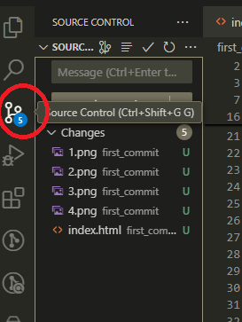
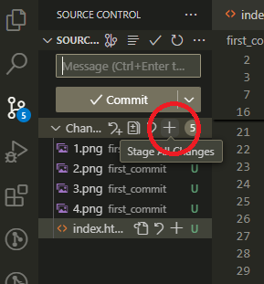
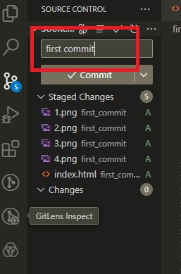
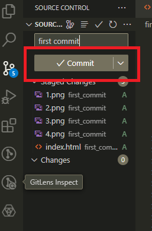
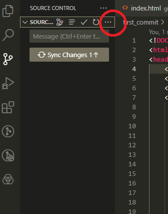
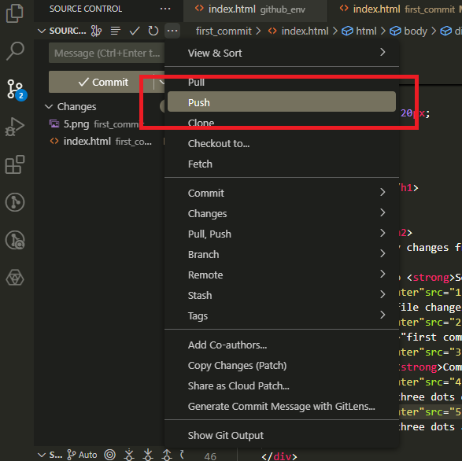
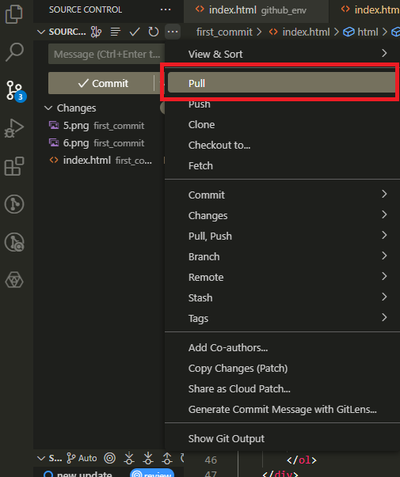
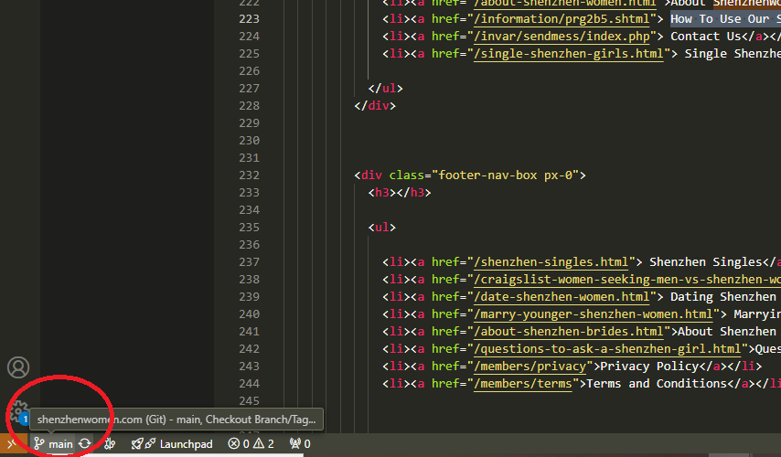
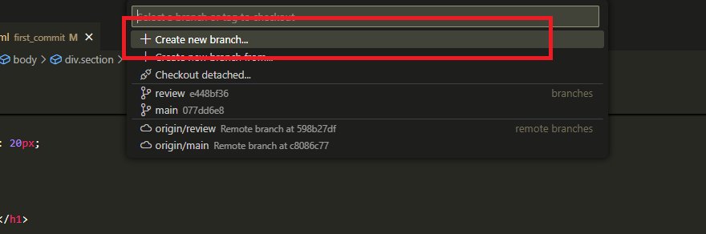

Development Guide
First Commit
Do not make any changes from the FTP file.
- Navigate to Source Control.

- Stage all file changes by clicking the
+ button on the right side of Changes.

- Type
"first commit" in the message field.

- Click the Commit button.

- Click the three dots on the upper right side of Source Control and select Push.


- Click the three dots again and select Pull.

Create Local Branch
- At the bottom left of the VS Code window, click Branch.

- Click Create New Branch.

- Type
"local" and press Enter.
Folder Structure
- Rename the folder
imagemaps to imagemap.
- Move the folders
imagemap and graphics to www.